By Mike Abrash
The other day, I had to go pick up a friend at the bus station in Springfield. I'd never been to Springfield, much less the bus station, and I didn't have a map of the city, but no problem, I figured—I'd just print out a map from Yahoo before I left.
And, in fact, that's what I did. The map contained the following instructions:
Unfortunately, it didn't say which exit, so I guessed it was the exit immediately after I-91 split off from US-5. Bad guess. It turned out that I had the wrong exit by about 2 miles, and was treated to an extended tour of the wrong side of the tracks as a result.
As you can see, getting your mappings right can be very important indeed. Which brings us, neat as a pin, to texture addressing modes.
The version of Microsoft7® Direct3D® for the Xbox video game console from Microsoft supports an extended set of texture addressing modes—that is, modes that control how texture coordinates near or beyond the boundaries of textures are handled. The texture addressing mode for a given texture stage is set separately for each texture axis by calling
IDirect3DDevice8::SetTextureStageState(
stage,
{D3DTSS_ADDRESSU | D3DTSS_ADDRESSV | D3DTSS_ADDRESSW},
texture_addressing_mode)
where the second parameter selects the texture axis for which the mode is to be set. The full set of available texture addressing modes consists of
D3DTADDRESS_WRAP D3DTADDRESS_MIRROR D3DTADDRESS_CLAMP D3DTADDRESS_BORDER D3DTADDRESS_CLAMPTOEDGE
The first four are standard Direct3D texture addressing modes; the fifth, clamp-to-edge, is an Xbox extension. Note that D3DTADDRESS_MIRRORONCE is not available on Xbox, since the hardware doesn't support it. These modes are discussed in detail below.
Each pixel drawn with texturing enabled has associated texture coordinates that specify the point at which to sample the texture. (There may of course be multiple textures and sets of texture coordinates per pixel, but we'll discuss only the one-texture case here.) The texture is sampled via a filter, which may be point-sampled, bilinear, trilinear, quadrilinear (for 3D textures only), or anisotropic (for 2D textures only). Depending on the filter, anywhere from 1 to 64 texels may be read from the texture and filtered together to produce the final filter value; in all cases except point-sampled, filters span multiple texels.
Whenever texture coordinates are located so that part of the texture filter lies outside the texture, there is a question of what sample values should be read by that filter, since without some sort of intervention, the filter will attempt to read nonexistent texels. (Note that a bilinear filter centered at (0,0) will sample off the top and left edges of the texture, because the filter reads a 2 x 2 block of texels, so this can be an issue even for texture coordinates that are on the texture but near the edge.) The answer is determined by the selected texture addressing mode, which can cause texture sampling to be wrapped, mirrored, clamped in either of two ways, or free to float around the texture and a surrounding border, as we'll discuss shortly. First, however, we need to establish some terminology and basic concepts.
Let's start by defining the texture coordinate spaces. For swizzled and compressed textures (but not image-that is, linear-textures, as discussed below), texture addressing is as follows. (This is a 2D texture, and this paper will directly discuss only 2D except as otherwise noted, but the 1D and 3D cases are straightforward extensions, involving applying the same principles to either one axis or three axes.)
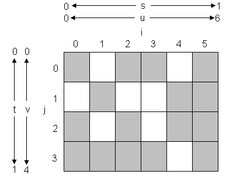
The coordinates that are associated with vertices (either by being in the vertex data structure or as a result of texture generation in the vertex shader) are s and t values (and r for 3D textures), which range from 0 to 1 across the width and height of the texture, respectively. (Properly speaking, it's s' and t' that range from 0 to 1 across the texture, where s' = s/q and t' = t/q (and r' = r/q for 3D textures). However, q is 1 in all cases except projected textures, so for simplicity we're just going to use s and t instead of s' and t' throughout this paper (and r instead of r' for 3D textures), with the understanding that for each pixel fragment using a projected texture, the texture coordinate in [0,1] space, which is referred to as (s,t) in this paper, is (s/q,t/q) rather than (s,t), after which everything works as usual.)
The s and t texture coordinates are multiplied by the dimensions of the texture to yield u and v values (and p for 3D textures), as follows:
where width and height are the width and height of the texture in texels. This scaling takes us from describing the texture with a coordinate system with range [0,1] along all axes to describing the texture with a coordinate system with ranges [0,width] and [0,height], mapping to one unit per texel.
The u and v values are interpolated across the triangle, so each pixel fragment has an associated (u,v) texture coordinate. These (u,v) texture coordinates are eventually turned into one or more ("more" because of filtering, as discussed below) integer [i][j] texel coordinates (or [i][j][k] for 3D textures), each of which uniquely specifies a texel. In short, s and t are unscaled coordinates that range from 0.0 to 1.0, u and v are scaled texture coordinates that run from 0.0 to width and height, and i and j are integral texel array coordinates; understanding this is key to understanding texture addressing. The i and j index scales will not be shown in figures from now on, to avoid cluttering the figures, but are implied since they are simply floor(u) and floor(v).
Note that the use of s, t, r, u, v, p, i, j, and k in this paper does not match the Direct3D documentation, which uses only u and v, and which uses them to mean what s and t mean in this paper. In fact, this paper's usage follows OpenGL conventions (with the exception of p, which OpenGL confusingly refers to by the same name as the fourth homogenous coordinate, w). I'm diverging from Direct3D conventions (and to a small extent from OpenGL conventions as well) in the interests of clarity; it is difficult to properly describe texture addressing modes without scaled, unscaled, and integer texture coordinates, so I've chosen to base this paper on conventions that account for all three texture coordinate ranges.
Also note that, somewhat confusingly, vertex texture coordinates for image textures are specified directly in the texture-size-scaled (u,v) space. (It's swizzled and compressed textures that are, as described above, specified in unscaled (s,t) space and scaled into (u,v) space by the hardware.) Image-texture coordinates are required to be prescaled because the hardware would require a general multiplier to convert (s,t) to (u,v) for the non-power-of-two widths and heights of image textures; for other textures, width, height, and depth are a power of two, so the conversion can be done much more cheaply. Thus, for image textures only, the texture coordinates provided in vertex structures or generated in a vertex shader are what this paper refers to as u and v values. Note that projected image textures do work, although the texgen matrix has to be scaled up to account for u/q and v/q rather than s/q and t/q.
Texture coordinates are interpolated across the texture in a perspective-correct fashion as a triangle is drawn, based on the vertex values, so each pixel fragment to be drawn has an associated (u,v) coordinate that describes a point to be sampled in the texture, which we will call the filter point. It is the (u,v) coordinates of the filter point and the filter that is in effect that together determine exactly which texels are read for a given filter point, as well as the way in which those texels are combined to form the filter value to be returned.
A point-sampled filter returns the value of the texel that (u,v) lies within. One way to describe this is the equation:
filter_value = texture[ifloor(u)][ifloor(v)]
where ifloor() floors the value and returns it as an integer, and the texture[width][height] is the texture addressed as a two-dimensional array. Another is to view the texture as covered with 1 x 1 box filters, each exactly covering one texel and returning the value of that texel; in this case, the filter point selects a box filter to sample. For a 1D texture, point-sampled filtering would look like this:
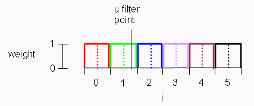
Each filter is shown in a different color, and a dotted line shows the center of the texel the filter applies to. A filter point at u = 1.75 is also shown; the value returned for this filter point is simply the value of the texel at i = 1. Note that the centers of texels are at n + 0.5, where n is the texel index in the array, and that the box filter covers the interval [n, n + 1).
Yet another way to describe point-sampled filtering is with a figure:
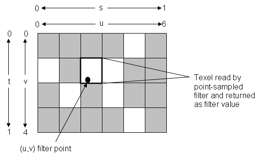
There are likewise several ways to view bilinear filtering, which basically returns a weighted average of up to four texels near the filter point, with the weighting inversely proportional to distance from the filter point. One way is to say that it generates four points-which we'll call sample points-from the filter point. (For comparison, each point-sampled filter has exactly one sample point, which is the same as the filter point.) The sample points are as follows:
ul = u - 0.5 ur = u + 0.5 vt = v - 0.5 vb = v + 0.5 sample_point_1 = (ul,vt) sample_point_2 = (ul,vb) sample_point_3 = (ur,vt) sample_point_4 = (ur,vb)
A bilinear filter reads four texels from those four sample points:
sample_value_a = texture(ifloor(ul), ifloor(vt)) sample_value_b = texture(ifloor(ul), ifloor(vb)) sample_value_c = texture(ifloor(ur), ifloor(vt)) sample_value_d = texture(ifloor(ur), ifloor(vb))
determines four weights:
wr = frac(u - 0.5) wl = 1 - wr wb = 1 - frac(v - 0.5) wt = 1 - wb
where frac(x) returns the fractional portion of the value (x - floor(x)), in the range [0,1), and then calculates:
filter_value = wl * wt * sample_value_a + wl * wb * sample_value_b + wr * wt * sample_value_c + wr * wb * sample_value_d
That's kind of hard to visualize, however. Another, more intuitive, approach is to view the texture as covered with 2 x 2 pyramidal weighting ramps, each centered at the middle of a texel, with a value of 1 at the center sloping linearly down to 0 one texel away. The height of a pyramid at a given texture coordinate is the weighting to be given the associated texel at that texture coordinate. For a 1D texture, linear filtering (not bilinear because there's only one filtering axis) would look like this:
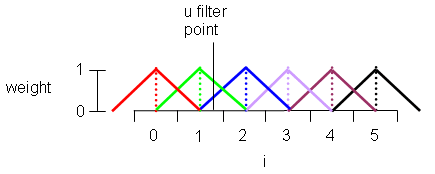
Each filter is shown in a different color, and a dotted line shows the center of the texel the filter applies to. A filter point at u = 1.75 is also shown; the value returned for this filter point would be:
filter_value = 0.75 * texture(1) + 0.25 * texture(2)
The 2D case would be similar; with the filter point covered by up to four pyramids. To calculate the filter value for a (u,v) texture coordinate, the hardware evaluates the value of each pyramid at the filter point, and uses those values as weightings to combine the values of the texels associated with the pyramids. This is, of course, equivalent to the weightings in the equations above. Note that the sum of the weights is always 1.0, so the filter for a constant input is the same value, and the image is not darkened or lightened by the filter.
Perhaps the most easily visualized approach, however, is to think of the bilinear filter as being exactly one texel in size, centered around the texture coordinate, like so:
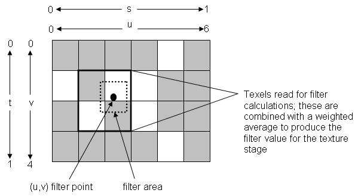
The filter area then touches up to four texels (but just one texel if it's exactly centered over a texel). Each texel in the filter area is read and combined with the others according to the proportion of the filter that's over that texel.
You can use this knowledge to do linear filtering along some axes but point-sample the other. For example, with 3D textures you can set the r coordinate to k + 0.5 to effectively point-sample plane k of the 3D texture, while still doing arbitrary bilinear filtering in the (s,t) plane. This is a fast way to change textures; rather than requiring a state change, it can be done by simply using a different r coordinate for three vertices, so it's handy for animations done by flipping through textures or for using multiple textures in a single vertex buffer's worth of point sprites.
All other filters are variations of bilinear and point-sampled. Trilinear filtering for 2D textures is like bilinear, but in two different mipmap levels at once, with the results from the two levels combined in a weighted average. Trilinear is orthogonal to the choice of point-sampled versus bilinear, so you can average between either type of filter in two miplevels, or select the nearest miplevel.
Anisotropic filtering is basically one to eight of the above filters (one when magnifying, two or more when minifying) laid out in a line and weighted together, resulting in an asymmetric filter area that helps compensate for edge-on viewing. As usual, the filters can be point-sampled or bilinear, and nearest-mipmap or weighted-average-of-two-nearest-mipmaps (anisotropic filtering is not supported for 1D or 3D textures.)
That's the full set of 2D filters, but other dimensions are available. 3D textures can be point-sampled or 2 x 2 x 2-filtered, and independently nearest-mipmap or weighted-average-of-two-nearest-mipmaps. Similarly, 1D textures can be point-sampled or linear-filtered, and nearest-mipmap or weighted-average-of-two-nearest-mipmaps.
The fact that all filters except point-sampled are built on bilinear filtering, or its 1D or 3D equivalents, is important because once we establish how point-sampled and bilinear are handled by the various texture address modes, the other filters will be straightforward extensions of bilinear. In particular, a trilinear filter is clamped, wrapped, mirrored, and so forth by applying the active texture address mode separately to each of the two bilinear samples that make up the trilinear filter; likewise, each of the two to eight subfilters (point-sampled or bilinear, nearest-mipmap or weighted-average-of-two-nearest-mipmaps) that make up an anisotropic filter are clamped, wrapped, etc., separately. Thus, the behavior of point-sampled and bilinear filters is all we need to know in order to understand how texture address modes work. (Actually, all that's required is an understanding of how point-sampled and linear features work in 1D, but since most of your textures will be 2D, we'll talk primarily about the latter. All the wrap modes below can be applied to any or all texture dimensions, regardless of whether the texture is 1D, 2D, or 3D.)
A pivotal aspect of non-point-sampled filtering is that for all filters except point-sampled, the texel containing the (u,v) filter point is not necessarily the only texel read, which can cause complications even with on-texture filter points. A bilinear filter sampled at (0,0) is going to want to read the texel at the upper left corner of the texture, which is fine, but also the texels to the left, above, and above and to the left of that texel-none of which actually exist, as illustrated below.
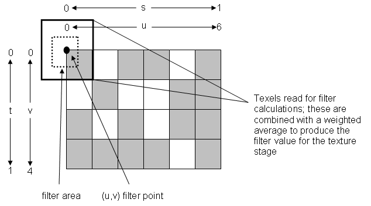
Obviously, this is a problem, but texture address modes exist precisely to handle this eventuality. Now that we understand (s,t), (u,v), [i][j], and filtering, we can discuss the first three texture address modes.
The D3DTADDRESS_WRAP texture addressing mode tiles the texture at integer (s,t) coordinates, so the (s,t) texture coordinates (0,0) to (1,1) select the same texels as (1,0) to (2,1); likewise for (-1,-3) to (0,-2). Given an s texture coordinate from which to read a texel, the i texture coordinate from which the texel value is actually fetched is calculated as
i = ifloor((s - floor(s)) * width)
or equivalently
i = ifloor(mod(u, width))
depending on whether you prefer to think in terms of s or u. (This paper will present both s and u formulations, since either can be a convenient frame of reference. They're conceptually equivalent, and it's convenient to be able to see how values in both coordinate systems map to the texture. Also, since all texture axes follow the same behavior, we will discuss only s and u here, but the same results obtain for t and v, or, for that matter, for r and p, for 3D textures.)
Above, mod() is defined to return the difference between u and the next lower multiple of width, so the result is always a positive number. Thus mod(-11.5,10) would be 8.5.
Note that the above calculation is performed on a per-sample-point basis, not a per-filter-point basis-that is, separately for every texel read by the filter (one texel for a point-sampled filter, up to four texels for a bilinear filter). Thus, for a bilinear filter with a filter point of (0,t), some texels will be read from the left edge of the texture, and others will wrap around to be read from the right edge. In other words, each of the up-to-four separate texel reads made for a bilinear filter is individually wrapped according to the above equation, so if the filter pokes off one edge of the texture, it will wrap seamlessly back around to the other edge.
Another way to think of this texture mode is to imagine the texture expanded to an infinite plane tiled seamlessly with the texture, so that there is a specific texel at every [i][j] coordinate all the way out to infinity, as follows:
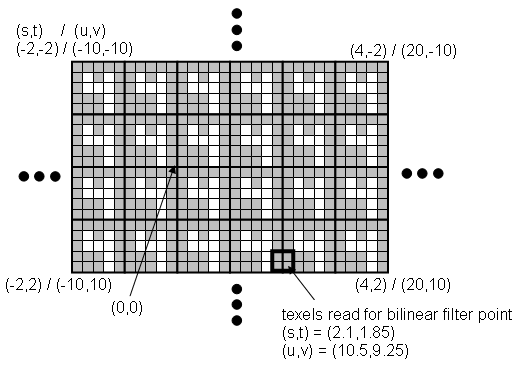
The tiles are aligned so that the upper-left corner of one copy of the texture is at (0,0). Then any texture coordinates, no matter how large, simply map each vertex to somewhere on this infinite plane. (Be aware, however, that numeric precision issues limit the accuracy of very large texture coordinates; refer to the separate paper "Texcoord Range Issues" for details.) As an example, the texels that would be read for the bilinear filter point (2.1,1.85) (or, equivalently, the (u,v) texture coordinate (10.5,9.25)) are indicated.
D3DTADDRESS_WRAP does not work with image textures.
The D3DTADDRESS_MIRROR texture addressing mode both tiles the texture and reverses each texture coordinate axis at integer s or t coordinates, so mirror images alternate. The (s,t) texture coordinates (0,0) to (1,1) select the same texels as (2,0) to (3,1), but (1,0) to (2,1) would select an image mirrored in s, and (-1,-1) to (0,0) would select an image mirrored in both s and t. Given an s texture coordinate from which to read a texel, the i texture coordinate used for the sample point is calculated as
i = ifloor( (s - floor(s)) * width) if floor(s) is even i = ifloor( (1 - (s - floor(s))) * width) if floor(s) is odd
or equivalently
i = ifloor(fmod(u, width)) if floor(u / width) is even i = ifloor(width - fmod(u, width)) if floor(u / width) is odd
and likewise for t, v, and j. Note that this calculation is performed separately for every texel read by the filter.
Another way to think of this texture address mode is to imagine the texture expanded to an infinite plane (as described under D3DTADDRESS_WRAP) tiled seamlessly with 2 x 2 blocks, each containing four copies of the texture, one normal, one s-mirrored, one t-mirrored, and one mirrored in both s and t, as follows:
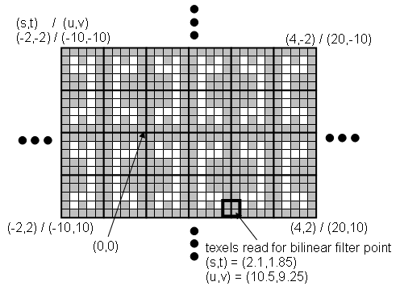
The tiles are aligned so that the upper-left corner of one copy of the texture is at (0,0). Then the texture coordinates, no matter how large, simply map each vertex to someplace on this infinite plane. (Be aware, however, that numeric precision issues limit the accuracy of very large texture coordinates; refer to the separate paper "Texcoord Range Issues" for details.) As an example, the texels that would be read for the bilinear filter point (2.1,1.85) (or, equivalently, the (u,v) texture coordinate (10.5,9.25)) are indicated.
D3DTADDRESS_MIRROR does not work with image textures.
The two modes we've discussed so far operate on individual sample points-that is, separately on each of the texels read by a filter. D3DTADDRESS_CLAMP takes a different approach to handling filters that run off the texture, clamping not individual sample points but rather the (u,v) filter point (the center of the filter) so that the filter never reads off the edge of the texture. When clamp mode is in effect, any attempt to place the filter point outside the texture or within one-half texel of the edge of the texture results in the filter point being moved to one-half texel from the edge of the texture; since a bilinear filter is one texel across, this keeps bilinear filters entirely on the texture at all times.
Formally, the clamped filter point (which I'll call (u',v') here) is calculated as
u' = s * width if 1 / (2 * width) <= s <= 1 - 1 / (2 * width) u' = 1 / (2 * width) if s < 1 / (2 * width) u' = 1 - 1 / (2 * width) if s > 1 - 1 / (2 * width)
or equivalently
u' = u if 0.5 <= u <= width - 0.5 u' = 0.5 if u < 0.5 u' = width - 0.5 if u > width - 0.5
and similarly for t, v, and v'. Again, this calculation is performed only once per texture per fragment, for the filter point.
Another way to think of this texture mode is to imagine the texture expanded to an infinite plane (as described above under D3DTADDRESS_WRAP), with the border texels replicated to infinity so that any point can be sampled directly, as follows:
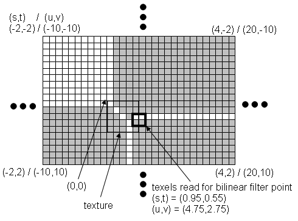
As an example, the texels that would be read for the bilinear filter point (0.95,0.55) (or, equivalently, the (u,v) texture coordinate (4.75,2.75)) are indicated. Note that unlike wrap and mirror, there are no numeric precision issues associated with clamping (or with border or clamp-to-edge, for that matter).
For anisotropic filters used with this texture address mode, each of the bilinear filter points in the anisotropic filter is clamped separately, so sample points can never extend off the texture. In particular, they can never extend into the border (which is discussed below).
If you are familiar with OpenGL clamping, you may find it confusing that this mode is equivalent to OpenGL's CLAMP_TO_EDGE mode, while D3DTADDRESS_CLAMPTOEDGE is equivalent to OpenGL's CLAMP mode.
At this point, we a going to have to digress to discuss border textures, an understanding of which is required for the remaining two texture address modes.
As you may have noticed, the texture addressing modes we've discussed so far share one common trait-they never actually try to read texels off the edge of the texture. Instead, they simply map off-edge sample points back onto the texture (for wrap or mirror), or clamp the filter point so that all the sample points are on the texture (for clamp). That's fine for the cases that are satisfied by wrap, mirror, or clamp, but there are other scenarios that aren't addressed by those modes.
For example, suppose that you want to draw a quad, covering it exactly once with the full extent of a bilinear-filtered texture. Neither wrap nor mirror would generally suit your needs, since as the filter point got within half a texel of the edge of the texture, it would start wrapping around to take samples from the opposite edge of the texture, which would usually produce undesired effects. It may not be immediately obvious why clamp wouldn't do the trick, but consider the following:
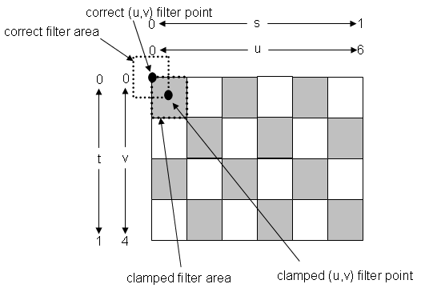
(Note that wrap or mirror would in fact work in the particular case of the checkerboard above, but not in the far more common case where the left and right or top and bottom edges don't match up perfectly.)
As another example, suppose that you want to draw two triangles, each with a different texture, next to each other as seamlessly as if you had combined them into a single texture-that is, as if the bilinear filter could span the seam between them. Wrap and mirror obviously wouldn't work, because whenever it straddled the common edge, the filter would wrap to the other edge of the same texture. Clamp wouldn't work unless both textures had identical texels along the seam-in which case the double row of identical texels surrounding the seam would be a visible artifact.
What we need to solve this is a way to get proper data from both textures for a filter along a seam of this sort. There's no way a filter can read from two textures at once, but the Xbox Graphics Processing Unit (Xbox GPU) does offer a solution in the form of border textures. Before we can describe those, however, we have to introduce the concept of the border.
Do you recall how, when discussing D3DTADDRESS_WRAP, we visualized the texture as expanding to an infinite plane? Let's do that once again, but this time, rather than replicating parts of the texture out to infinity, let's surround it with a border color out to infinity, where the border color is set by calling:
IDirect3DDevice8::SetTextureStageState(stage, D3DTADDRESS_BORDER, color)
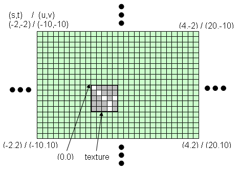
Here the border color is green, and the texture is white and gray. Now when a filter extends over the edge of the texture, it'll have something to sample-the border color. (Note that none of the three modes we've seen thus far can actually sample the border, but, as you might expect, the modes we'll discuss shortly can.)
The border color has its uses, as well see later, but since it provides only a single color for all off-texture sample points, it can't solve the above-mentioned problems. Fortunately, there's a more powerful way to define the contents border area: a border texture.
A border texture is a texture that has a four-texel-wide fringe (the contents of which we'll call border texels) around the texture proper (which henceforth we'll call the normal texture or just the texture, and the contents thereof normal texels or just texels). Outside this fringe the border color comes into play, as described above. We'll call the entire area outside the texture the border, comprised of both border texels (if present-that is, if the texture is a border texture) and the area beyond them that's covered by the border color. A figure is the best way to visualize this:
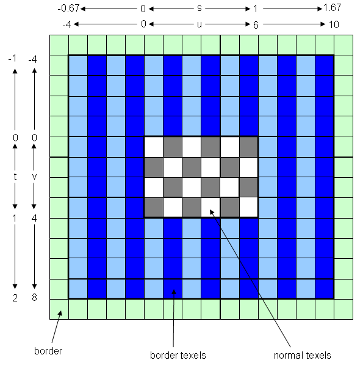
Here the texture itself contains a gray-and-white checkerboard pattern, the border texels are vertical stripes of two shades of blue, and the border color is solid green. Only one texel of the border-color area is shown, but it extends to floating-point infinity. Note that parts of the border are addressed with negative texture coordinates, and that the origin-the (0,0) point-has moved over and down four texels from the upper left corner. Because both the origin and the texture itself have shifted by the same amount, texture coordinates that are within a border texture will read exactly the same texels as if the texture were not a border texture. Also note that the s and t coordinates of the outside of the border-texel area will vary with texture size, but the u and v coordinates will always be -4 and dimension + 4, where dimension is width or height.
A texture is flagged as a border texture if the D3DFORMAT_BORDERSOURCE_COLOR bit in the texture's Format field is zero when SetTexture is called; this tells the hardware that the border source is not a color, but the border area of a texture. Using the Register APIs, this is done by simply not setting that bit in the Format field of the pre-constructed texture structure. Using CreateTexture, you can explicitly clear the bit after creating the texture with code along the following lines:
IDirect3DTexture8 * pTexture; pDev->CreateTexture(..., &pTexture); pTexture->Format &= ~D3DFORMAT_BORDERSOURCE_COLOR;
All that clearing this bit does is tell the hardware that there's a 4-texel fringe of border texels, that it should treat the upper-left corner as [i][j] coordinate (-4,-4), and that the texture pitch is the texture width plus the border plus padding that brings the total width up to the next power of two size (see below for details). Of course, each dimension is expanded separately.
(For image textures, the pitch and the width are always independently set, regardless of whether the texture is a border texture or not-it is up to the application to set the image texture pitch correctly, that is, to at least the image width plus space for the border texels. The hardware believes the value that is set for image pitch and will work regardless of the value set for it, even for values that are less than the image width; some weird effects are possible when you do that.)
With border textures, the border can provide any desired texels for filters that extend off the edge of the normal texture. By copying texels from adjacent textures into the border, the seam problem described above can be solved. Similarly, border texels can provide additional filter data so that bilinear filtering can work properly right up to the edge of a stand-alone texture. Another important use of border textures is for cube maps, especially small ones, in order to allow the texture filtering to cross the cube map seams properly.
Obviously, border textures add value only when filters can extend off the normal texture, which can never happen with any of the three texture addressing modes we've discussed above. All three modes will work with border textures, but they map all texel coordinates into the st range (0,1) and never try to read outside the normal texture, so they work exactly the same way with or without border textures. Since border textures are considerably larger than normal textures, for reasons that will be explained shortly, it never makes sense to use border textures in wrap, mirror, or clamp mode, unless for some reason you need to switch dynamically between one of those modes and one of the two modes discussed below.
However, the two remaining texture addressing modes-border and clamp-to-edge-can have filters that extend off the normal texture. It is with these modes that border textures come into their own, as we'll see shortly.
Border textures are obviously larger than equivalent normal textures, if only because of the four-texel padding around the texture. A more serious impact, however, arises because all non-image textures-that is, swizzled and DXTC textures, which generally constitute the bulk of all textures used-must have power-of-2 dimensions. For all non-image textures, the border texels cause the texture size to have to double (or more, for texture dimensions smaller than 8) in each direction, so for swizzled and DXTC textures border textures are at least four times larger than their normal equivalents.
This brings us to an interesting quirk of mipmapped border textures. Large border texture mipmaps simply quadruple in size versus equivalent non-border textures, so a 16 x 16 mipmap for a border texture requires 32 x 32 texels of total memory space. Only 24 x 24 of this is actually used-the 16 x 16 texels plus a 4-wide border-but mipmaps must be powers of 2 in size. The next miplevel, 8 x 8, likewise doubles in each dimension, to 16 x 16, but now no space is wasted. Here comes the strange part: the following miplevel, 4 x 4, ends up taking the same 16 x 16 block of memory that the preceding miplevel did, because the 4-wide border together with the 4x4 texture makes a 12 x 12 block, and 16 x 16 is the next power-of-2 size. For the same reason, all border texture miplevels from 8 x 8 on down require 16 x 16 blocks of memory. This size expansion applies to each dimension separately, so if the miplevel is a 3D texture of size 2 x 4 x 16, the actual allocated size is 16 x 16 x 32.
Normally, the largest texture dimension allowed is 4K texels in 1D or 2D, and 512 texels in 3D. However, because they have negative texture coordinates, border textures have one bit less with which to address textures, so the largest border texture dimension allowed in 1D or 2D is 2K texels, and in 3D, 256 texels.
The D3DTADDRESS_BORDER texture address mode applies the border in a straightforward way, sampling the border for any sample points off the texture. When a border texture is not in use, the sample value for a given sample point (one of up to four read by a bilinear filter) is calculated as
sample_value = border_color if s >= 1 or s < 0 or t >= 1 or t < 0 sample_value = texture(ifloor(s * width),ifloor(t * height)) if 0 <= s < 1 and 0 <= t < 1
or equivalently
sample_value = border_color if u >= width or u < 0 or v >= height or v < 0 sample_value = texture(ifloor(u),ifloor(v)) if 0 <= u < width and 0 <= v < height
Thus, all coordinates within the texture return the corresponding texel, and all coordinates outside the texture return the border color.
Things actually work the same way with border textures, thanks to the magic of negative coordinates, except that the limits at which the border color kicks in change. When a border texture is in use, the sample value for a given sample point is calculated as
sample_value = border_color if s >= 1 + 4 / width or s < -4 / width or
t >= 1 + 4 / height or t < -4 / height
sample_value = texture(ifloor(s * width),ifloor(t * height))
if -4 / width <= s < 1 + 4 / width and
-4 / height <= t < 1 + 4 / height
or equivalently
sample_value = border color if u >= width + 4 or u < -4 or
v >= height + 4 or v < -4
sample_value = texture(ifloor(u),ifloor(v)) if -4 <= u < width + 4 and
-4 <= v < height + 4
where texture [i][j] handles negative coordinates in order to address border texels, and the upper-left corner of the texture is at (u,v) coordinate (-4,-4). Thus, all coordinates within the texture or the border texels return the corresponding texel, and all coordinates outside that return the border color.
Again, the above equations are applied to each sample point within a filter, rather than to the filter point itself.
It's easy to see how the infinite-texture visualization approach discussed earlier applies in this mode; simply plunk the filter down wherever you want on the border-surrounded infinite texture discussed above, and sample the values under the filter.
As an example, the following figure illustrates how proper checkerboarded filtering can be provided right to the edge of the normal (non-border) texture by using border textures and border texture address mode. Here the filter point is (0,0), the upper-left corner of the normal texture, and the solid black line encloses the four texels-three of them border texels-that this filter reads. Two of the sampled texels are white and two are black, and they're all weighted equally, so the resulting filter value will be the correct value for this position in a checkerboard, gray.
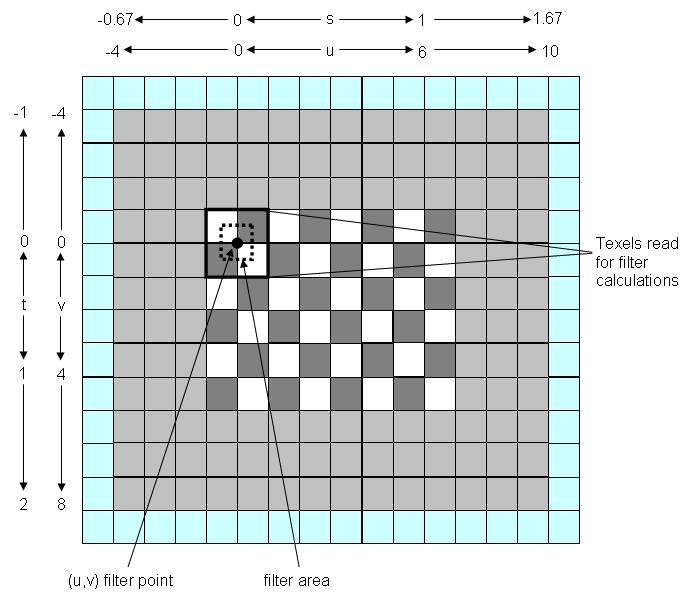
Note that only a one-texel-wide strip of the border has been checkerboarded; a bilinear filter with filter point that's on the normal texture can't reach more than one texel into the border, so there's no point to providing any more border texels in this case. However, a full border should be provided in cases where the filter point isn't guaranteed to remain on the normal texture. Also, an anisotropic filter can have a wider spread, so a full set of border texels should be provided if you're using anisotropic filtering.
Compressed textures, which are composed of 4x4 blocks, are easy to add borders to; just add a layer of 4x4 blocks around the edge of the texture. For the case of filtering two DXTC textures together seamlessly, you can generally just pull the adjacent compressed blocks from the adjoining textures and use those directly. (However, for the 2x2 and smaller mip levels you will need to recompress the resulting block-this will be discussed in another paper on mipmapping.)
The case of the seam between adjacent textures is similarly addressed by border texture mode combined with border textures. Simply put the edge texels of each texture into the appropriate border texels of the other, and the filter will have the correct texels to sample when it straddles the seam between the triangles the textures are drawn on.
Do not confuse the texture addressing mode we've been discussing-border texture addressing mode-with border textures themselves, despite the unfortunate similarity of names. Border texture address mode tells the hardware where to look for off-texture samples, specifying that the border (which may or may not include border texels) provides sample values for sample points off the edge of the texture. In contrast, a border texture tells the hardware how to address the texture, specifying that there is a four-texel-wide fringe around a texture, with the upper-left corner at (-4,-4) and (for non-image textures) a texture pitch that is twice the width. Either one can be enabled or disabled, and will work properly, independently of the other.
As an example of the usefulness of border addressing mode without a border texture, consider pasting a high detail texture in the middle of a low detail texture by using a border color of (0,0,0,0) on the high-detail texture and D3DTOP_BLENDTEXTUREALPHA. As another example, a reasonably effective (and much less memory-hungry) alternative to using border textures is to concatenate textures together by abutting them and adding them together, using border colors of black and border mode, so that the textures smoothly blend from one to the other. Both approaches save texture memory, but at the cost of using additional texture stages.
The D3DTADDRESS_CLAMPTOEDGE texture addressing mode is an Xbox extension. It is exactly like D3DTADDRESS_BORDER, except for one thing: the filter point is clamped to the texture. Rather than describe it in detail, we're simply going to say that it's a subclass of D3DTADDRESS_BORDER that imposes an extra restriction on the filter point. Formally, the filter point (which I'll call (u',v') here) is calculated as
u' = s*width if 0 <= s <= 1 u' = 0 if s < 0 u' = width if s > 1 (see below for point-sampled behavior)
or equivalently
u' = u if 0 <= u <= width u' = 0 if u < 0 u' = width if u > width (see below for point-sampled behavior)
and similarly for t, v, and v'. Again, this calculation is performed only once per texture per fragment, for the filter point.
One quirk of this mode is that point-sampled filters get clamped to [0,1) rather than [0,1]. This means that a point-sampled filter point with an s coordinate of, say, 1.1 ends up sampling the texel at the i coordinate width-1. The net result is that when clamp-to-edge is in effect, it is not possible to point-sample off the normal texture. This applies only to point-sampled filter points; bilinear filter points clamp to [0,1].
For bilinear filtering and clamp-to-edge texture addressing mode, with 1D textures, up to 50 percent of samples for a single filter can be from the border; with 2D textures, up to 75 percent of samples can be from the border; and with 3D textures and clamp mode, up to 87.5 percent of samples can be from the border.
For anisotropic filters used with this texture address mode, each of the bilinear filter points in the anisotropic filter is clamped separately, so no filter can extend more than one-half texel into the border.
If you are familiar with OpenGL clamping, you may find it confusing that this mode is equivalent to OpenGL's CLAMP mode, while D3DTADDRESS_CLAMP is equivalent to OpenGL's CLAMP_TO_EDGE mode.
Finally, if you want to use the infinite-texture visualization with clamp-to-edge, you must do it by first clamping the filter point to be on the normal texture, and then treating it as border addressing mode. In other words, you can't really use an infinite texture, but must rather use a subpart of the infinite texture of border addressing mode. The reason why this is so is not important (and you can probably figure it out quickly if you think about it); I just wanted to make sure you're aware of this limitation.
Filter point texture coordinate modification:
Wrap-none
Mirror-none
Clamp-clamped to one-half texel inside texture boundary
Border-none
Clamp-to-edge-clamped to texture boundary
Sample point texture coordinate modification:
Wrap-wrapped modulo texture width or height
Mirror-wrapped modulo texture width or height, inverted from one wrap to next
Clamp-none
Border-none; any sample points off texture (and texture border, if present) return border color
Clamp-to-edge-none; any sample points off texture (and texture border, if present) return border color
Can sample border:
Wrap-no
Mirror-no
Clamp-no
Border-yes
Clamp-to-edge-yes